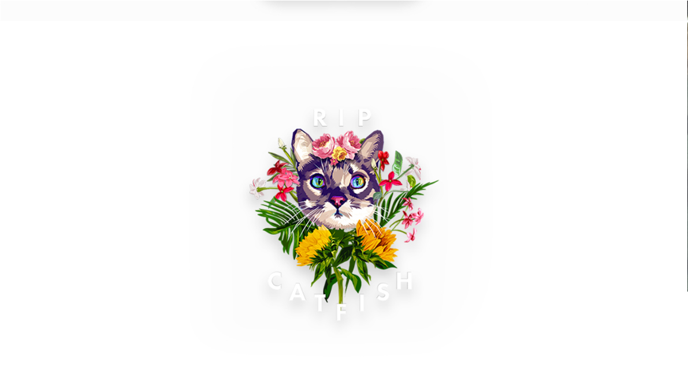
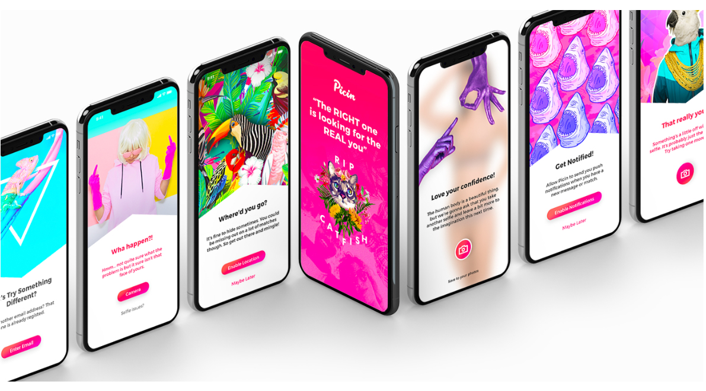
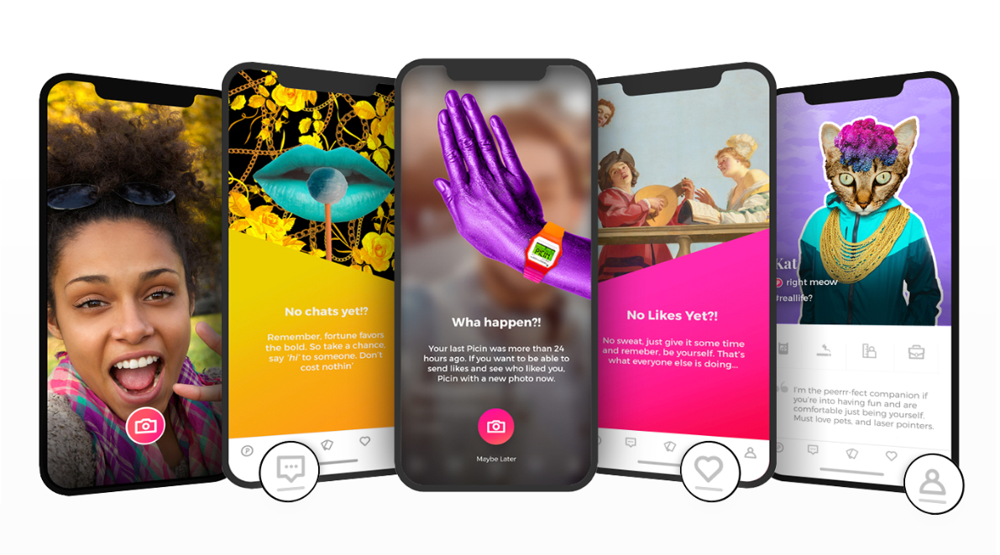
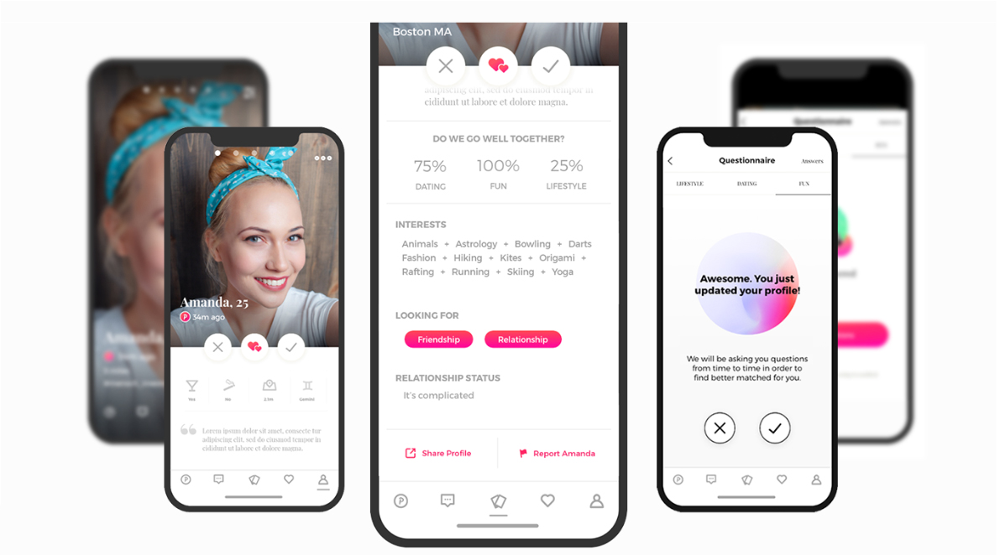
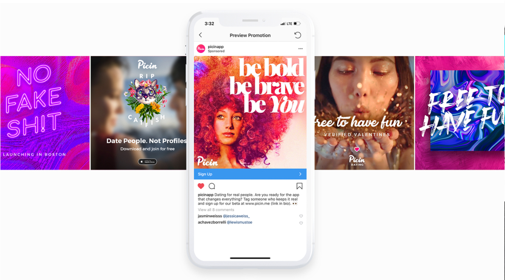
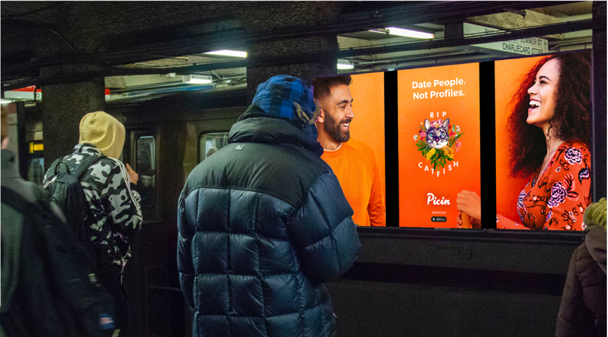

A dating and social app that requires a new selfie every 72 hours to keep engaging with other users — built to make catfishing structurally impossible instead of just discouraged.

[Ari: replace with the real problem] Existing dating apps let people build a profile once and coast on it indefinitely, which meant photos could be years old, heavily edited, or outright fake. How might we design a dating app where the person you're about to meet actually looks like their profile — without turning verification into a chore that kills the fun of the app?
[Ari: swap in real research findings — user interviews, competitor gaps, data points] People don't distrust dating apps because they lack features — they distrust them because verification is an afterthought, not a habit. A one-time "verified" badge doesn't hold up over months of use. The insight: make re-verification a *recurring, built-in* part of using the app at all, so trust is refreshed automatically rather than something users have to seek out.

Instead of a one-time verification step, Picin prompts users for a fresh selfie every 72 hours to keep browsing and matching. The prompts lean into the app's playful tone rather than feeling like a security checkpoint — "Wha happen?!" and "Where'd you go?" instead of a sterile "verification required" message.

Going too long without a new selfie limits what a user can do in the app — but the messaging frames it as missing out on fun ("no likes yet," "no chats yet") rather than being punished, keeping the tone consistent with the brand's irreverent voice.

[Ari: confirm/replace — describing the profile & match screens] Profile cards surface compatibility across dating, fun, and lifestyle categories alongside shared interests, giving users more to go on than a photo and a one-line bio before deciding to match.

The "RIP Catfish" mark and lines like "Date People. Not Profiles." turned the core verification feature into the entire brand story — used across paid social, out-of-home ads, and app store creative so the product's differentiator was never buried in fine print.

[Ari: add real outcome — launch markets, downloads, press, user feedback] Picin launched with a full identity system built around its "RIP Catfish" mascot and campaign line, including out-of-home advertising in transit stations — putting the app's core promise ("date people, not profiles") directly in front of the exact audience tired of getting catfished elsewhere.

Placeholder: something like — building trust into the product's core mechanic works better than bolting on a verification badge, because it can't go stale.
Placeholder: something like — a strong, specific brand voice can carry a feature that would otherwise feel like friction, turning "we make you re-verify" into a reason to download the app.